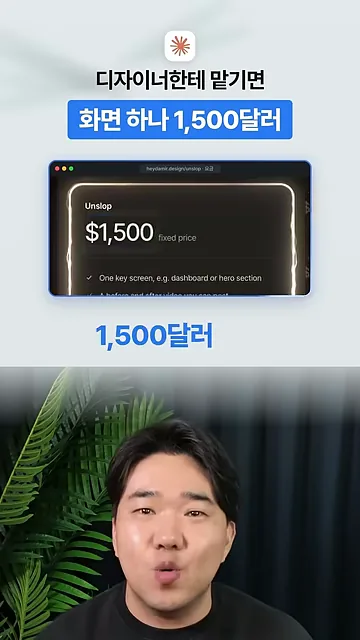
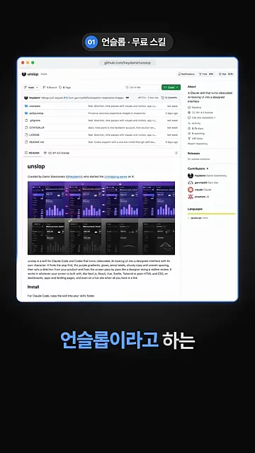
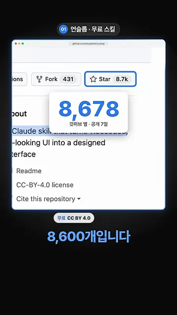
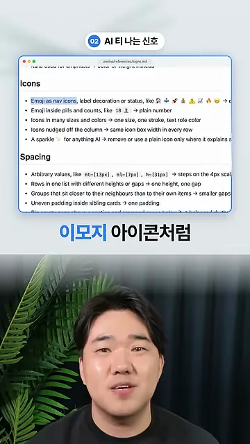
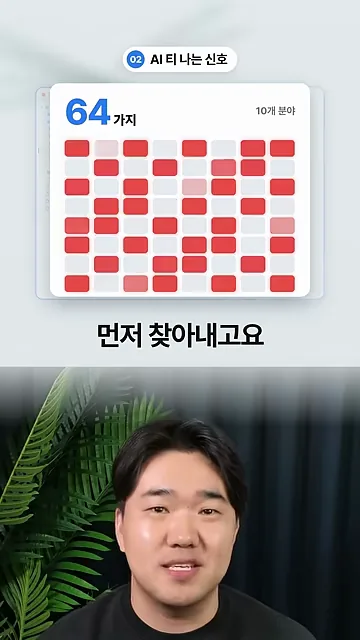
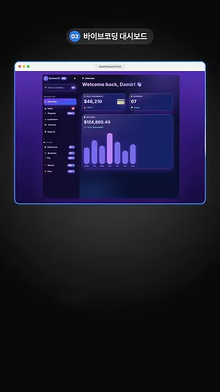
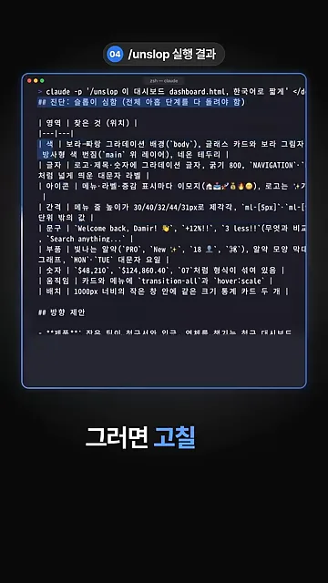
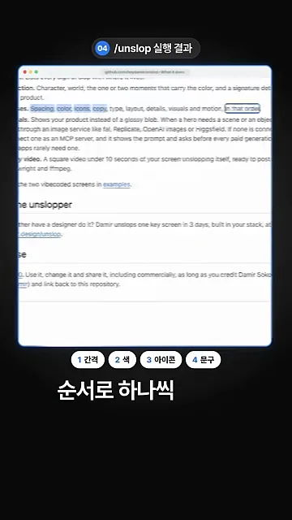
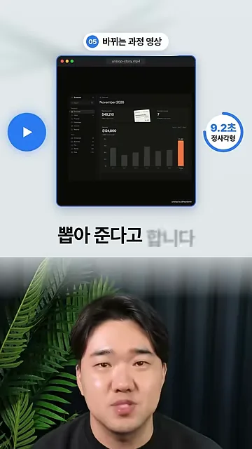
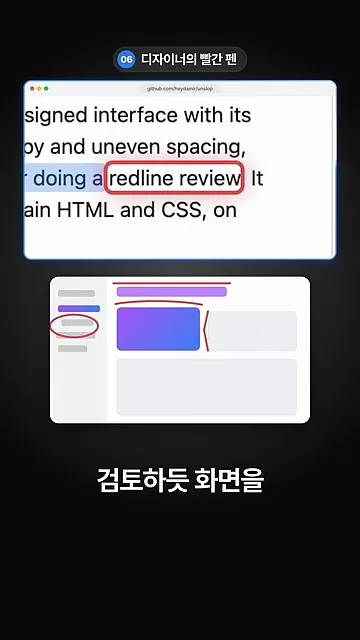

언슬롭은 어떤 스킬인가요
영상은 가격부터 꺼내요. 디자이너에게 화면 하나를 맡기면 1,500달러가 든다고 해요. 화면에 뜬 견적 카드 맨 위에 'Unslop'이라는 서비스 이름, 가운데에 '$1,500 fixed price', 아래에 '핵심 화면 하나(대시보드나 히어로 섹션)'라는 조건이 적혀 있어요.

그 일을 대신하는 도구가 언슬롭이라는 무료 스킬이에요. 아래 캡처는 깃허브 저장소 첫 화면이에요. README 맨 위에 보라색 대시보드가 단계별로 바뀌는 프레임들이 줄지어 있고, 그 아래에 Claude Code용 스킬이라는 소개와 설치 안내가 이어져요.

반응도 빨랐다고 해요. 10월 29일에 공개돼 일주일 만에 별이 8,678개 붙었어요. 오른쪽 위 Star 버튼에 8.7k, 포크는 431개가 보이고, 아래 배지는 무료 라이선스 CC(Creative Commons) BY(Attribution) 4.0이에요.

AI 티 나는 신호 64가지
언슬롭은 고치기 전에 먼저 AI 티가 어디서 나는지부터 찾아요. 영상이 예로 든 건 보라색 그라데이션과 이모지 아이콘이에요. 아래 캡처는 저장소의 신호 목록 파일(signs.md)이에요. Icons 아래 첫 줄 '메뉴 아이콘으로 쓴 이모지'가 강조돼 있고, Spacing 아래에는 mt-[13px]처럼 제멋대로인 간격 값이 보여요. 줄마다 화살표(→) 왼쪽이 신호, 오른쪽이 고치는 법이에요.

영상은 이런 신호가 모두 64가지라고 해요. 다음 장면에서는 '64가지', '10개 분야'라는 글자 아래 칸이 빨갛게 채워져요. 칸 하나가 신호 하나예요.

바이브 코딩 대시보드에 돌려 보기
시험 대상은 바이브 코딩으로 만든 대시보드예요. 보라색 배경에 보라색 막대그래프, 'Welcome back, Damir!' 인사 옆 손 이모지, 메뉴마다 붙은 색깔 배지까지, 앞에서 본 신호가 한 화면에 다 모여 있어요.

여기에 /unslop 한 줄을 넣어요. 터미널 첫 줄의 명령은 claude -p '/unslop 이 대시보드 dashboard.html, 한국어로 짧게'예요. 결과는 '진단: 슬롭이 심함 (전체 아홉 단계를 다 돌려야 함)'으로 시작하고, 영역마다 찾은 것과 위치를 표로 보여 줘요. 맨 아래에는 '방향 제안'이 이어져요.

캡처 글씨가 작아서, 진단 표에서 읽히는 부분을 옮겨 적었어요.
| 영역 | 찾은 것 |
|---|---|
| 색 | 보라-파랑 그라데이션 배경, 글래스 카드와 보라 그림자, 네온 테두리 |
| 글자 | 로고·제목·숫자에 그라데이션 글자, 굵기 800, 'NAVIGATION'처럼 넓게 띄운 대문자 라벨 |
| 아이콘 | 메뉴·라벨·증감 표시마다 이모지 |
| 간격 | 메뉴 줄 높이가 30/40/32/44/31px로 제각각, ml-[5px] 같은 단위 밖의 값 |
| 문구 | 'Welcome back, Damir!', '+12%!!', '3 less!!', 'Search anything...' |
| 숫자 | '$48,210', '$124,860.40', '07'처럼 형식이 섞여 있음 |
| 움직임 | 카드와 메뉴에 transition-all과 hover:scale |
| 배치 | 1000px 너비의 작은 창 안에 같은 크기 통계 카드 두 개 |
진단과 방향 다음에는 하나씩 고쳐요. 영상이 짚은 순서는 간격 → 색 → 아이콘 → 문구예요. 화면 아래쪽에 '1 간격, 2 색, 3 아이콘, 4 문구' 칩이 차례로 붙고, 위쪽 README에서는 같은 단어들이 형광펜으로 칠해져 있어요.

영상 속 흐름을 한 장으로 그리면 이래요.
flowchart LR A["/unslop 실행"] --> B["진단: 신호 64가지 찾기"] --> C["방향 제안"] --> D["1 간격"] --> E["2 색"] --> F["3 아이콘"] --> G["4 문구"] --> H["과정 영상"]
바뀌는 과정은 짧은 영상으로도 뽑아 준다고 해요. 화면에는 unslop-story.mp4 파일과 '9.2초 정사각형' 배지가 보여요. 영상 속 대시보드는 이미 어두운 회색 톤으로 차분해졌고, 막대그래프에서 마지막 막대 하나만 주황색이에요.

영상은 이 모든 과정을 디자이너가 빨간 펜으로 검토하듯 화면을 다듬는 것이라고 정리해요. README 문장 속 'redline review'에 빨간 테두리가 쳐져 있고, 아래 그림에서는 보라색 덩어리와 비뚤어진 메뉴에 빨간 표시가 붙어 있어요.
